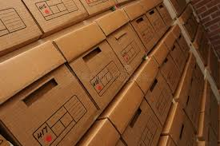

Chess.com
Although I have been VERY busy lately, I sometimes can find time to do a little bit on Chess.com. Not only is this site free, but it has dozens of
articles and news to keep you updated on the important happenings of the Chess world. It also has hundreds of thousands of other players who one can
communicate with and discuss strategies. In addition, this website has special tools to help chess players enhance their skills. In order to raise funds,
they have upgrades you can purchase with a small monthly fee and unlock more lessons, tactics, and other info to improve your chess skills. Though I am
not even a club-level player by far, I still have enjoyed pitching my wits against other similiarly experienced players. If you play on chess.com, you
can contact me via my username: Seattle_Slugger!
Lane Community College
Sure this school is liberal and has its problems, but for the most part it is actually not that bad. If it wasn't for LCC I would not have
been able to code this website! I have enjoyed all but one of my class there and have learned SO much. I am part of the CIT (Computer Information
Technology) Department and have already taken tons of classes learning C#, C++, HTML/CSS, .Net framework, computer science, and database management to name a few.
On my own time, I continue to learn coding and programming languages such as Python and Java Script. I have also enjoyed learning high-level math and physics.
University of Oregon
The University of Oregon is nothing like Lane Community College. Rough classes, lots of walking, party-heavy peers, safety breaches all the time, and general
problems in administration make my stay here challenging at best, but through it all, I have learned patience and careful monitoring of situations. As I am in one
of the toughest programs/majors at the University of Oregon, I have had to bring my A-game just to pass classes which has also been challenging. With God's Strength
I hope to finish out my years at UO somewhat smoothly.
DOWL Engineers


I was super busy the summer of 2018, but doing what?! I applied for an "intership" at my dad's engineering firm (OBEC Consulting Engineers) and was accepted along with
another highschooler! My job was to scan their paper documents into digital files so they don't have to store all that paper. Despite the simple job description, the job
came with its fair share of challenges - forcing me to be thorough and learn the workings of industrial-sized printers/scanners. I enjoyed learning about what my dad
actually does and gaining insight into the structural engineering world. During the summer, I worked with another high-schooler named Shengmei(she is in the picture), but
when school started my older brother, Kent, took over her position for a few months and helped finish up the job with me.
Currently, OBEC has merged with DOWL and now is now under the "DOWL Engineering" name. After nearly two years of work, I completely finished scanning all of the miscellaneous
documents for the company and providing assistance in several odd jobs around the office. My job there provided me with valuable resume experience, and I am very thankful for the
opportunity that they gave me.
Buck General Contracting
The summer of 2019 started off with a bang - literally! In order to help a neighbor with her rental house's remodel, I was hired on as a temporary employee of Buck Contracting Inc.
My job was to do "house demolition" with another employee. I ripped out carpet, base boards, sheet rock, ply board, secondary board, staples, nails, roofing, skylights, and
a myriad of other objects. Also, I was able to watch other subcontractors like electricians and sheet rockers do their jobs. This job has provided me with valuable
experience in how buildings are constructed and remodled.
Elegant Elephant Baking
The summer of 2020 saw me working full time as a dish washer at Elegant Elephant Baking Co. A completely gluten free bakery that specializes in just about everything! The employees,
management, environment, and job was all lots of fun, and I got to make some cool friendships. By early fall, I finally obtained my food handlers license and was promoted to flour mixer.
I will continue to work part time as a dishwasher/flour mixer there as the school year progresses, and if you ever get the hankering for a little something - feel free to stop by at
our storefront!
LEGO!
If you know me fairly well, you know that I love LEGO. Here are some pictures I found of an old LEGO theme that I loved (and still love).
FYI: You can't actually click on the images to find out - LEGO discontinued the rock monster character quiz a long time ago. Sorry.

2018 Highlights
Tons of stuff happened this year. To begin the year, I started winter term at LCC attending four classes: HTML/CSS, Beginning C# Programming, Communication,
and Introduction to Computer Science Degrees. After a delightful winter term except for Communication class in which I learned how NOT to communicate,
I had a short spring break where I crammed in as much yard care as my body could handle and then began Spring term with Math, Intermediate C# Programming, and Economics.
My math teacher I had during fall term of last year and I really liked him and his teaching style; he made math really fun. In addition, C# was fun
thought the class wasn't anything exceptional. My economics class was great because I had an amazing teacher who played Chess on Chess.com
with me. Around this time, I also got my driving permit. I feel like I picked it up fairly quickly(due to hundreds of hours of playing racing games on my computer)
During the early summer I crammed more yard work and put together my first resigme and cover letter and applied for an internship position
at my dad's engineering company; I was accepted!!! You can read more about it here. This winter, I have continued to work at OBEC which
has now been merged with DOWL (and now is officially called DOWL), but only part-time because I am now back in school. This term I am learning calculus,
Advanced C# Programming, and Micro Economics. It is tough, but fun at times as well.
This year has also been an emotional roller coaster for me. In January and February two of my family's hamsters had a batch of fourteen babies, just
before the father(Timmy) and our other adult hamster(Coconut) died. We loved those hamsters so much and it was a bitter blow to me. However, every
baby survived including the mom(Katee). We couldn't keep all the babies(of course), but we found loving families and a pet store for the excess.
A month later, one of the male babies that we kept escaped into his sister's cage and we ended up with another batch of 16 babies. We found
families and the same pet store for all of the babies and are now left with just Katee and three of her children: Cupcake (reminds my family of
Coconut), Prince(a very small and well-trained boy), and my hamster, DJ(the most playful, gentle hamster you could ever meet. Her ripped ears
are a result of fights she had with her bigger sisters when she was smaller, but now she is the biggest hamster we own). Our very old bunny is almost
completely crippled but still living, which is a big blessing that God has given us.
2019 Highlights
Winter term was a very hectic term as I was taking 18 credits and kept very busy. I learned C++ really fast, and accelerated my Spanish learning!
I also finished my second term of calculus which was integral calculus. I enjoyed learing calculus, but it also introduced me to the world of math that starts getting tough.
Spring term was crazy with me taking four classes. I learned a lot of basic Computer Science concepts, became an expert on Cold War Era history in the U.S., learned how
to live a healthy lifestyle, and finished up a very interesting series of economics. I felt like my economics class helped me to understand the complexity of our economic
system and that it is not so cut and dry as some may assume. The government actually has a very tough job...
During summer term, I just took one class - Writing 227 where I learned to right formal documents such as reports, resumes, cover letters, and proposals - stuff that will prove
valuable for my career. You can download my Resume that I created here. For fall term, I took Computer Science 161,
Math 231 (Discrete Mathematics), and Physics 201. The physics was really tough with all sorts of new concepts
and formulas that challengde my intellect while my mathematics came on hard and fast. Intensive amounts of dedication were required to finish the term, and I took a big sigh of relief
when it was over. During the summer, I was able to travel with my family to the Oregon State Fair. My youngers sister, Kirsten, was partipitating at a Child Evangelism Fellowship booth
(telling young children and not-so-young adults about Christ) while the rest of us wandered around for a while and got very hot. I also had my homeschool graduation in which I saw many friends
and family and celebrated my graduation from highschool. (My actual graduation from highschool according to the government will be next summer along with my graduation from Lane
Community College) Also, Kent showed up for my graduation which was a very pleasant surprise. (He is now working at Disneyland in California, and I do not see him very much).
This year was the year of deaths. So many people and animals died, that I have lost count and my heart aches for all of those that I have lost. It started off with Chiggles,
my family's very sweet, lop-eared bunny that we had for at least 7 years who died early on in the year. Eventually, we were able to get rid of our large bunny hutch, since we
were not expecting to get another bunny. Then, during the summer, Grandma Slocum died. It was not terribly sudden, but it was certainly sad, though her death meant that all my cousins,
uncles, and aunts visited - some of which I had not seen in quite a few years. Then, the season of fall hit. My favorite kindergarten teacher at Sunday school died, a wonderful brother in Christ
and evangelist died, a life-long friend who had I done yard-care for several years passed away, another life-long friend and neighbor passed, and another family friend passed away in Colorado.
Then, on top of all that, four of our hamsters died, one of whom was my best friends (as weird as that sounds!). That was it; I could not take it anymore, so I cried... and cried some more.
I am still recovering, so I am very thankful to God who has helped me through the mourning process. (Quick 2020 update: Grandpa Slocum just passed away - creating a lousy start to 2020.)
On a slighly brighter note, at the end of February we had a crazy snow storm that took some big branches off our Dogwood tree in our front yard. However, due to some careful pruning
we were able to keep it alive, so we will see how it does in the years to come. There also was enough snow that I was able to do some snow shoveling and built a snow tower that was about
8-9 feet tall wtih some neighbors and Kirsten. During November, I took my SAT test, but have not gotten my results yet. After two years of dedicated work at my internship at OBEC/DOWL, my
job came to a close - simply because I had done such a good job that I ran out of work. Also, I got a chance during the summer to work for Buck Contracting in renovating a house. I learned
lots of valuable carpentry skills and worked a lot of muscles and body parts. I am quite thankful for the experience I gained there. During the fall, some of my family and I took a trip
to my mother's parents' house. I got to talk with them, go on a walk, and pick grapes and apples there which was a lot of fun! Then for Thanksgiving, I went back up to my mother's parents'
house with my family and a few friends, and I got so see my younger cousins.
2020 Highlights
Despite the arrival of the virus known as COVID-19, this year was surprisingly uneventful. I believe this to be because I simply did not travel or leave the house much. Perhaps the greatest
events was my graduation from my charter school, Lane Community college (with four degrees!), and transferring to the University of Oregon without ever setting foot on campus! I am very grateful
to Lane Community College and Baker Charters School for giving me this opportunity to further my academic career in such a productive environment, and I hope that the University of Oregon can
be just as good. I believe that the highlight of 2020 was climbing South Sister with my dad. It was a grueling two days (including camping part way up the mountain), and my perseverance was definitely tested,
but reaching the top of the mountain and gazing down on all that I had climbed was a huge blessing. I'm not sure that I'm built for mountain climbing, but it was a cool experience,
and I certainly don't regret doing it. Here's to hoping that 2021 will see the ending of COVID-19, and the re-opening of school, church, restaurants, etc.
2021 Highlights
This year brough the beginning of in-person classes at UO, and a summer that was composed of me working at Elegant Elephant Baking Company and also working security at the U.S. Olympic
Trials at Hayward Fields. We ended the year with a rare, large amount of snow that seems to correlate with the intense heat experienced during the summer. Classes at UO, were very
interesting to say the least, but I eventually was able to develop a rhythm to get everything done.